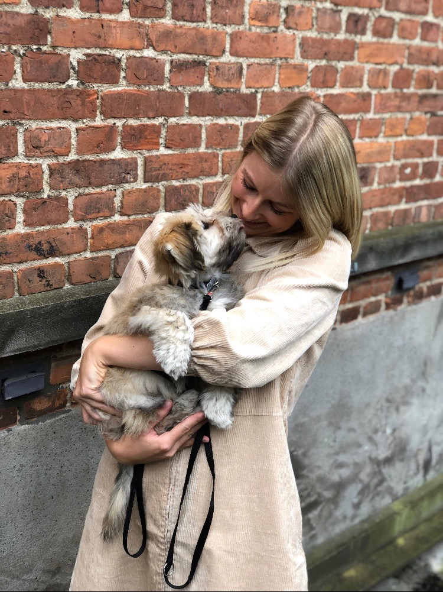
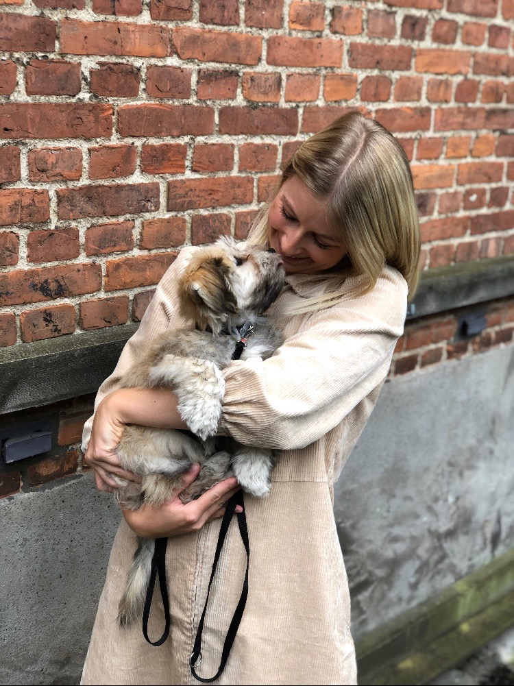

Jeg har udvalgt 5 billeder, som viser hvilken person jeg er.


 

Jeg bruger tid på æstetik. Æstetik i form af møbler, tøj og sko, indretning, kunst, arkitektur, en fælles passion hos min kæreste og jeg.
Jeg elsker at løbe og cykle på racercykel.
Jeg elsker fodbold, og følger tæt med hos klubberne Liverpool FC og Lyngby BK.
Jeg går lange ture med min kæreste og vores hund. Det giver ro og ny energi.